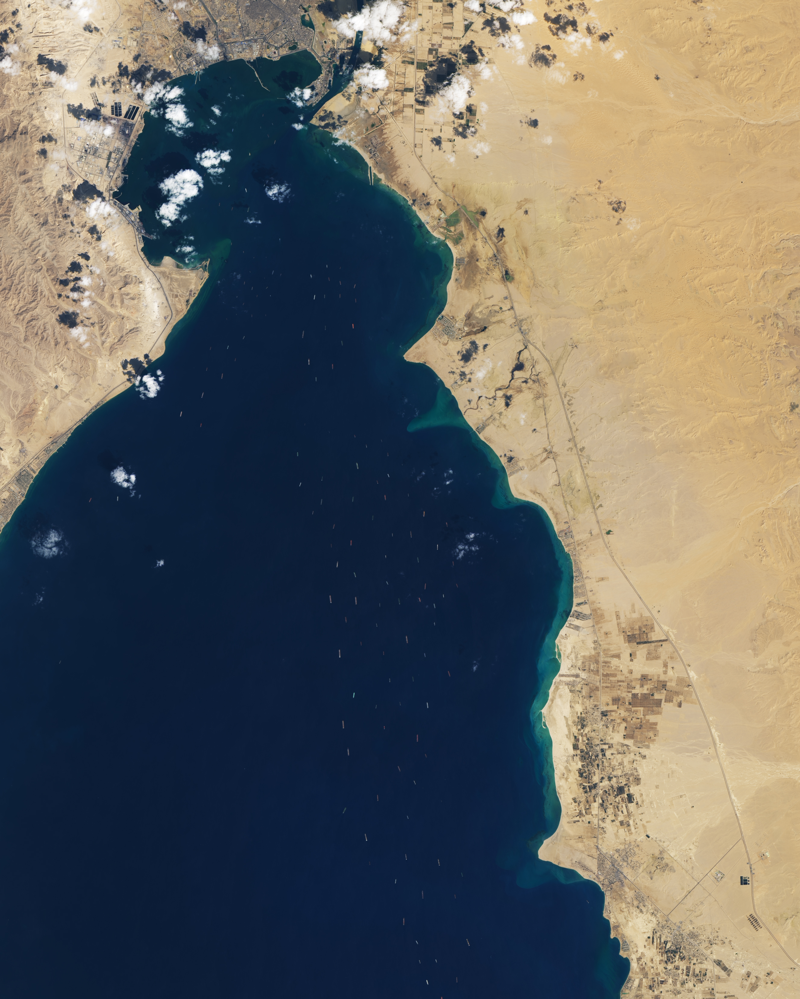
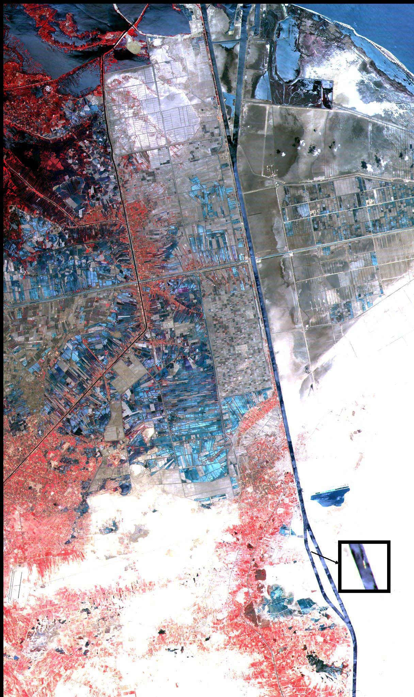

Pagi 23 Maret 2021, kapal kontainer Ever Given — panjang 400 meter, bobot 224.000 ton, muatan 20.000 kontainer — sedang melintasi Terusan Suez ketika angin kencang dan badai pasir menghantamnya. Haluannya kandas di satu tepi, buritannya di tepi seberang. Kapal itu melintang, menyumbat total terusan. Selama enam hari, dunia menyaksikan antrean kapal yang membentang hingga 100 kilometer — terlihat jelas dari citra satelit. Nilai dagang yang tertahan: US$9,6 miliar per hari, menurut Lloyd's List.

Seberapa Penting Terusan Ini?
Terusan Suez membentang 193 kilometer melintasi Mesir, menghubungkan Laut Mediterania dengan Laut Merah — jalan pintas antara Eropa dan Asia yang memangkas ribuan kilometer pelayaran. Sekitar 12% perdagangan dunia, ±30% peti kemas global, dan 8–10% minyak yang diangkut lewat laut melewati terusan ini. Dalam kondisi normal, 50–75 kapal melintas setiap hari.
Foto paling viral dari insiden 2021 bukan kapalnya — melainkan sebuah ekskavator mungil yang mengeruk pasir di samping lambung raksasa Ever Given. Kontrasnya sempurna menggambarkan absurditas peristiwa itu: infrastruktur perdagangan global abad ke-21 dilumpuhkan oleh kombinasi angin, pasir, dan satu kapal yang salah posisi.
Operasi penyelamatan dikerjakan Otoritas Terusan Suez (SCA) bersama perusahaan Belanda Boskalis/Smit. Pada 29 Maret 2021 pukul 15:05 waktu Mesir, Ever Given akhirnya dibebaskan — dengan bantuan 14 kapal tunda dan pasang purnama yang menaikkan permukaan air 46 cm. Kapal itu kemudian ditambatkan di Great Bitter Lake, dan berlayar lagi malam harinya.
Drama belum selesai: pada 13 April 2021, Mesir menyita Ever Given dan menuntut ganti rugi awal sekitar US$916 juta. Setelah negosiasi, tercapai kesepakatan US$540 juta pada Juli 2021 — dan kapal itu berlayar ke Rotterdam pada 7 Juli 2021.
1869: Digali 10 Tahun, Mengubah Peta Dunia
Terusan ini bukan fenomena baru. Konsesi pembangunannya diberikan kepada Ferdinand de Lesseps pada 1854/1856 oleh Sa'id Pasha (penguasa Mesir). Galian pertama dimulai 25 April 1859 — dan setelah 3.770 hari pengerjaan, terusan dibuka pada 17 November 1869. Jalur laut Eropa–Asia yang tadinya memutar Tanjung Harapan di ujung Afrika tiba-tiba terpangkas drastis.
Tetapi "kemerdekaan" Mesir atas terusan itu tidak bertahan lama. Pada 1875, saham Mesir di perusahaan terusan dijual ke Inggris — dan London menguasai jalur vital ini selama puluhan tahun.
1956: Nasser Mengambil Alih — dan Dunia Bereaksi
Pada 26 Juli 1956, Presiden Gamal Abdel Nasser mengumumkan nasionalisasi Terusan Suez. Motifnya konkret: dana untuk membangun Bendungan Aswan, setelah Amerika membatalkan dukungannya. Langkah ini meledakkan Krisis Suez (Oktober–November 1956): Israel menginvasi Sinai akhir Oktober, lalu Inggris dan Prancis mendaratkan pasukan awal November.
Tetapi zaman sudah berubah. Di bawah tekanan Amerika Serikat, Uni Soviet, dan PBB, Inggris–Prancis mundur pada Desember 1956; Israel keluar Maret 1957. Nasser menang — dan menjadi pahlawan dunia Arab. Terusan tetap di tangan Mesir.
Catatan redaksi: ada klaim jumlah korban jiwa pembangunan terusan mencapai 120.000 orang, tetapi angka ini hanya didukung satu sumber lemah — kami tidak memakainya sebagai fakta.
1967–1975: Terusan Ini Pernah TUTUP 8 Tahun
Ini fakta yang jarang diketahui: Terusan Suez pernah ditutup selama delapan tahun penuh. Pada 5 Juni 1967, pecah Perang Enam Hari — dan Mesir menutup terusan. Kapal-kapal yang terjebak di dalamnya (dikenal sebagai "Yellow Fleet") terdampar bertahun-tahun. Terusan baru dibuka kembali pada 5 Juni 1975.
Selama delapan tahun itu, seluruh perdagangan Eropa–Asia kembali memutar Tanjung Harapan — persis seperti sebelum 1869. Dunia sudah pernah merasakan "dunia tanpa Suez", dan harganya mahal.

Mesir Hari Ini: Gaji Sekaligus Sandera
Bagi Mesir, terusan ini adalah mesin uang — sekaligus titik lemah. Pada 2023, pendapatan terusan mencapai rekor US$10,25 miliar. Tetapi pada 2024, angkanya anjlok ke US$3,991 miliar — turun dua pertiga.
Penyebabnya: serangan Houthi. Sejak November 2023, kelompok Houthi di Yaman menyerang lebih dari 100 kapal di Laut Merah (2 tenggelam, 4 pelaut tewas). Trafik terusan anjlok ±60%; jumlah kapal yang melintas turun dari 26.000+ (2023) menjadi 13.213 (2024). Mesir kehilangan sekitar US$6,3 miliar dalam setahun — gara-gara perang di negara tetangga.
Ada tanda pemulihan: tahun fiskal 2025/26 pendapatan naik 23% ke US$4,67 miliar, dan raksasa pelayaran Maersk serta Hapag-Lloyd kembali melintasi pada September 2025. Pada 2015, Mesir juga menyelesaikan ekspansi terusan (jalur dua arah di sebagian segmen) yang memangkas waktu tunggu dari 8–11 jam menjadi 3 jam, dan waktu transit dari 18 menjadi 11 jam.
Plan B: Memutar Afrika
Ketika Suez macet atau berbahaya, alternatifnya cuma satu yang realistis: memutar Tanjung Harapan di ujung selatan Afrika — menambah 10–14 hari pelayaran, plus biaya bahan bakar dan emisi yang melonjak. Rute Arktik memang 30–40% lebih pendek, tetapi musiman (hanya Agustus–Oktober), membutuhkan kapal kelas es dan pendamping icebreaker — rekornya cuma 23 kapal per tahun, di bawah trafik harian Suez. Tidak ada pengganti yang murah.
Dampaknya sampai ke Indonesia. Krisis 2021 menaikkan biaya logistik Jawa Timur 209–238% (kontainer 20 kaki dari US$975 menjadi US$3.300). Freight CPO ke Rotterdam naik 80–100% (US$60–80 menjadi US$140–150 per ton) dengan tambahan waktu 10–14 hari. Empat sektor RI terdampak: manufaktur, tekstil, kimia-farmasi, dan migas. Krisis di Mesir, dompet di Surabaya yang kena.
Satu kapal, enam hari, US$9,6 miliar per hari. Itulah harga sebuah chokepoint.
Analisis: Dibaca Pakai Lensa Ketahanan Nasional
1. Ketergantungan pada satu jalur = kedaulatan ekonomi dipertaruhkan. Mesir meraup US$10 miliar dari terusan — lalu kehilangan dua pertiganya dalam setahun karena konflik di Yaman. Chokepoint adalah gaji sekaligus sandera. Pelajaran untuk Indonesia: diversifikasi rute logistik dan mitra dagang bukan kemewahan, melainkan kebutuhan.
2. Plan B tidak murah — ketahanan logistik dibangun sebelum krisis. Memutar Afrika menambah dua minggu dan biaya besar; tidak ada negara yang bisa "mendadak" punya rute alternatif. Ketahanan logistik nasional dibangun lewat diplomasi maritim, skema asuransi, dan stok strategis — sebelum krisis datang, bukan sesudahnya.
3. Krisis jauh, dompet dekat. Guncangan di Suez mendarat di harga pokok produksi Indonesia — dari biaya kontainer hingga margin eksportir yang terpangkas 44–80%. Ketahanan nasional hari ini diukur juga dari seberapa tahan rantai pasok sebuah negara terhadap guncangan di titik-titik sempit dunia.
Arsip & Referensi
Angka dan peristiwa di artikel ini diverifikasi silang dari sumber-sumber berikut:
- Lloyd's List — estimasi US$9,6 miliar nilai dagang tertahan per hari (Maret 2021).
- NASA Earth Observatory — citra Landsat 8 antrean kapal 27 Maret 2021; citra ASTER Terusan Suez 2000.
- Wikipedia — "Suez Canal", "2021 Suez Canal obstruction", "Suez Crisis", diverifikasi silang dengan sumber berita.
- BBC — kronologi Ever Given & alternatif rute Tanjung Harapan.
- Suez Canal Authority (SCA) — data trafik & pendapatan terusan.
- IMF — dampak serangan Houthi terhadap trafik Laut Merah.
- Media nasional Indonesia — dampak krisis Suez terhadap logistik & ekspor RI.
Kredit foto arsip: antrean kapal 2021 — NASA Earth Observatory / Lauren Dauphin & Joshua Stevens (data Landsat, USGS), public domain; citra satelit Suez 2000 — NASA Earth Observatory (data ASTER/Terra), public domain.
Catatan redaksi: klaim korban jiwa pembangunan terusan (120.000), klaim "terusan ditutup 5 kali", dan angka proyeksi pendapatan Mesir hanya didukung satu sumber — tidak kami pakai sebagai fakta. Dampak terhadap Indonesia dikutip dari media nasional (satu sumber per klaim).
Trilogi chokepoint selesai: Hormuz → Malaka → Suez. Versi ringkasnya ada di Instagram & TikTok @jejakkuasa — follow biar nggak ketinggalan peta kuasa berikutnya.